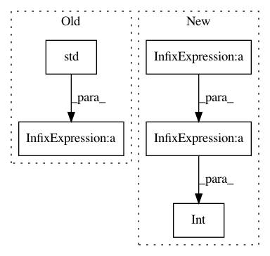

61e9af1a3757a8b75e86777bdfa341ef112a31d1,pymc3/step_methods/smc.py,SMC,calc_beta,#SMC#,280
Before Change
weights_un = np.exp((current_beta - self.beta) *
(self.likelihoods - self.likelihoods.max()))
sj = np.mean(weights_un)
cov_temp = np.std(weights_un) / sj
if cov_temp > self.coef_variation:
up_beta = current_beta
else:
low_beta = current_beta
After Change
while up_beta - low_beta > 1e-6:
new_beta = (low_beta + up_beta) / 2.
weights_un = np.exp((new_beta - old_beta) * (self.likelihoods - self.likelihoods.max()))
weights = weights_un / np.sum(weights_un)
ESS = int(1 / np.sum(weights ** 2))
//ESS = int(1 / np.max(weights))
if ESS == rN:
break
elif ESS < rN:
In pattern: SUPERPATTERN
Frequency: 3
Non-data size: 5
Instances
Project Name: pymc-devs/pymc3
Commit Name: 61e9af1a3757a8b75e86777bdfa341ef112a31d1
Time: 2018-01-26
Author: aloctavodia@gmail.com
File Name: pymc3/step_methods/smc.py
Class Name: SMC
Method Name: calc_beta
Project Name: pymc-devs/pymc3
Commit Name: 21c16153ecd473a027df2af1e9a4fd3c71810e1a
Time: 2017-04-14
Author: maxim.v.kochurov@gmail.com
File Name: pymc3/variational/callbacks.py
Class Name: CheckLossConvergence
Method Name: __call__
Project Name: pymc-devs/pymc3
Commit Name: 53eaac804522b516438762c1db1d31d43dda0254
Time: 2016-09-05
Author: colin@kensho.com
File Name: pymc3/diagnostics.py
Class Name:
Method Name: geweke